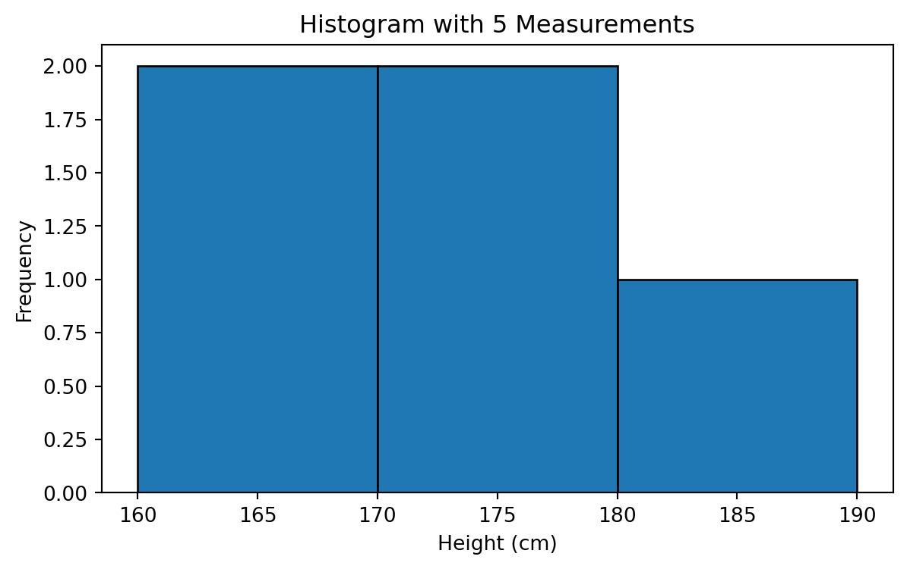
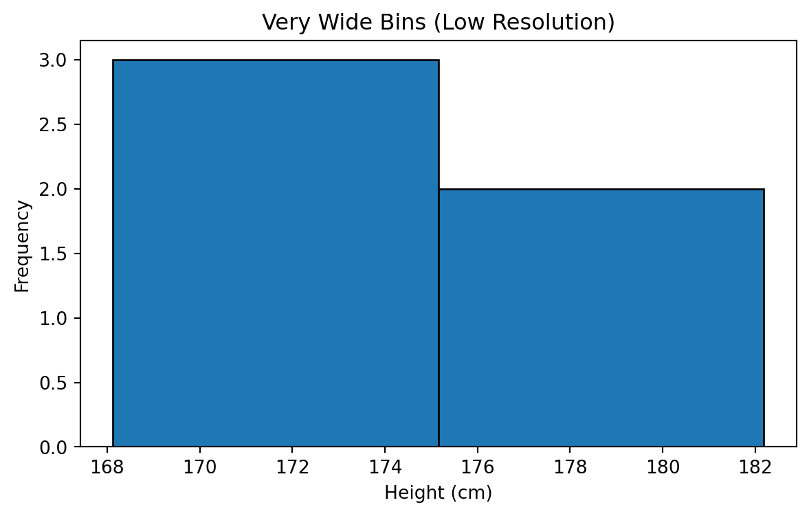
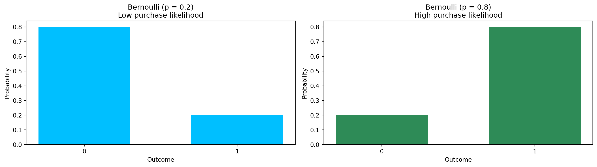

[174, 169, 175, 182, 168]Probabilistic Distributions
Statistical Thinking
Karen Hovhannisyan
2025-12-27
Well Known distributions

Why Probability Distributions?
A probability distribution is a mathematical description of how values occur.
In retail analytics they help us answer questions like:
- How long until the next customer arrives?
- How many customers enter per hour?
- What is the chance a customer buys after viewing a product?
- What happens when we know only a range but nothing else?
Normal Distribution
These first five people have heights around the high 144 to high 200.
Histogram with 5 People

Wider Bins

Narrower Bins

Increasing Sample Size to 300

Generalization
\[ f(x) = \frac{1}{\sigma \sqrt{2\pi}} \exp\left( -\,\frac{(x - \mu)^2}{2\sigma^2} \right) \]

Two Normal Distributions

Uniform
- Random checkout routing delay (e.g., anywhere between 0–10 seconds)
- Random discount reveal time in a promotion mini-game
- Random product display duration on a marketing banner
- Random delivery pickup window (e.g., 14:00–16:00)
- Simulation of uncertain but bounded retail processes
- Any situation where the value is known to be in a range, and all outcomes inside that range are equally likely

Exponential
- Time between customers arriving at checkout
- Time between online purchases
- Time until next product scan at self-checkout
- Time between clicks in an online session
- Time until next customer picks up a product from the shelf
- Any situation involving “waiting time until the next event” in retail

POISSON
Poisson
- Number of customers entering per hour
- Number of online orders per minute
- Number of carts abandoned in each 10-minute window
- Number of returns processed per 30-minute interval
- Number of loyalty signups per hour
- Any situation involving “how many events occur in a fixed time window”

Bernoulli
- Customer buys (1) or does not buy (0)
- Customer clicks a product (1) or ignores it (0)
- Customer redeems a coupon (1) or not (0)
- Loyalty signup (1) or no signup (0)
- Email open vs. no open
- Any situation involving a single yes/no retail event

Comparison of Distributions
Comparison | 1
Uniform:
- All values inside a range equally likely
- Random checkout delay
- Random promotion reveal time
- Random banner display duration
- Random delivery pickup window
Exponential:
- Waiting time until next event
- Time between customer arrivals
- Time between online purchases
- Time between product scans at self-checkout
Comparison |2
Poisson:
- Number of events in a fixed interval
- Customers entering per hour
- Online orders per minute
- Carts abandoned per 10-minute window
- Returns processed per interval
Bernoulli:
- Single yes/no outcome
- Buy (1) vs. no-buy (0)
- Click vs. no-click
- Coupon redeemed vs. not redeemed
- Loyalty signup vs. no signup
CLT
Why its important
The CLT allows analysts to:
- Estimate true average revenue per customer
- Compare stores or campaigns reliably
- Decide whether a promotion increased average spend
- Build confidence intervals for KPIs
- Run A/B tests using sample means
- Make strong conclusions from limited data
Key Idea